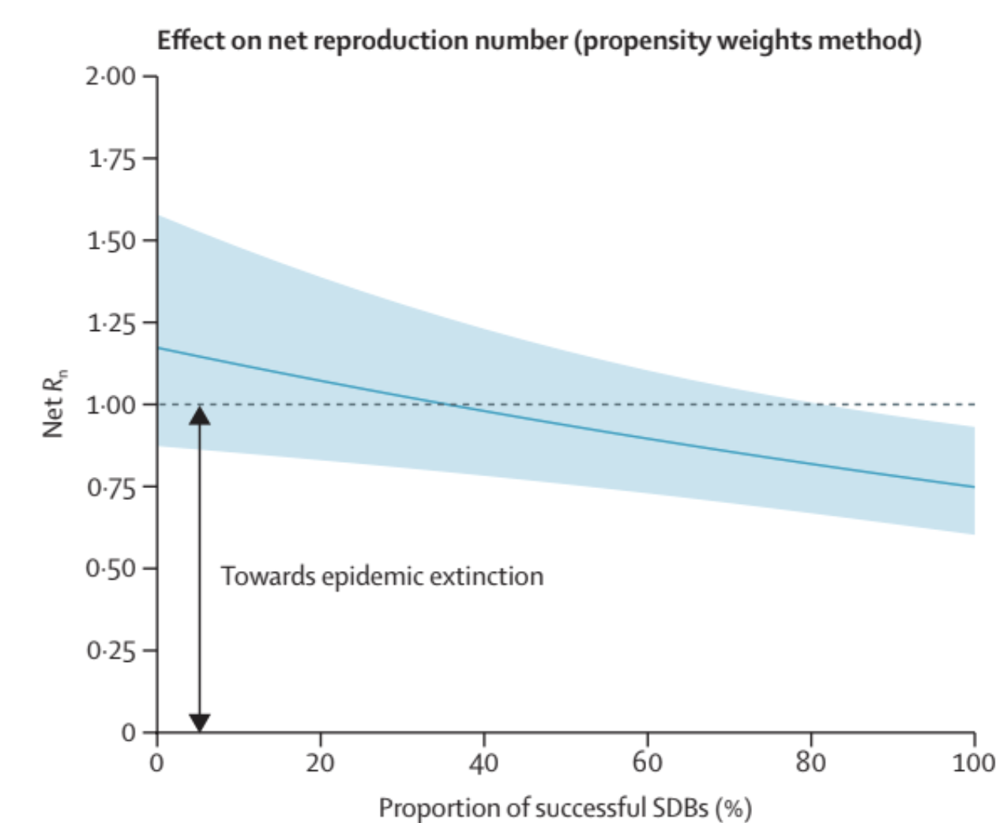

Ebola, a disease with a mortality rate that can reach above 90%, has ravaged West and Central Africa since its discovery in 1976. Funerals and burials can act as super-spreader events because the virus can spread from the deceased infected individual to attendees. Therefore, a safe burial process is necessary to curb Ebola transmission.
A study by Dr. Francesco Checchi and colleagues demonstrates the importance of Safe and Dignified Burial, or SDB, in reducing the spread of Ebola. The study analyzed data from a real epidemic: the 2018-2020 Ebola epidemic in the Democratic Republic of the Congo. It reinforces the important role burial practices can play in controlling Ebola outbreaks.
The "safe" part of SDB involves securing the body, disinfecting the environment, and burying the body in a sterile and timely manner. The researchers defined timely burial as burial conducted on the same day the request was made, using the delay between request and burial as a measure of timeliness.
The "dignified" part involves preserving the dignity of the person being buried and respecting cultural practices. That can include performing the burial at a location agreed upon with the family and providing psychological support. The SDB process offers a compromise between safety and cultural appropriateness, making it more acceptable than overly militaristic or medicalized burial procedures.
The researchers obtained burial data from the Red Cross and analyzed 7,823 SDB proceedings. They focused on both timeliness and execution of SDB procedures. To study the data, they divided Ebola cases into 21 health zones and split the timeline into two-week windows, allowing them to measure how SDB coverage changed over time and by region.
They also estimated the net reproduction number, or Rn, which is the average number of infections caused by each infected person at a given stage and location of an outbreak. If Rn is below 1, the disease cannot keep spreading and will eventually die out.

To compare successful SDBs and Rn, the researchers calculated the percentage of successful burials in each health zone during each rolling time interval. They also had to account for confounding variables: other factors, such as infrastructure and resource allocation, that could influence transmission. To reduce the impact of these factors, they used a method called propensity weighting.
The results showed that as the percentage of successful SDBs increased, Ebola transmission steadily declined. When the proportion of successful SDBs reached about 40%, Rn dropped below 1, meaning transmission fell below the threshold needed to sustain the outbreak.
The findings suggest that a large-scale, sustained SDB service, conducted with high coverage, timeliness, and success, may have considerably reduced Ebola transmission during the 2018-2019 eastern DR Congo epidemic. The result is powerful because it comes from real outbreak data rather than only a simulation or theoretical model.
The study was retrospective, meaning the researchers looked back at the epidemic rather than designing the data collection in advance. Because the data were not originally collected for research purposes, they may have contained inaccuracies. The methods used to reduce confounding variables are also not perfect, so some bias may remain.
Despite those limits, the study demonstrates the importance of safe and dignified burial in reducing Ebola transmission. Public-health interventions work best when they protect communities while also respecting the cultural needs of families affected by disease.
Works Cited
Checchi, F., Eamer, G., Katshitshi, J., Robles Dios, L., Kai, A., & Warsame, A. (2025). Effect of a safe and dignified burial intervention on Ebola virus transmission in the eastern Democratic Republic of the Congo, 2018-19: A propensity score analysis. The Lancet Global Health, 13(9), e1617-e1626. https://doi.org/10.1016/s2214-109x(25)00220-7